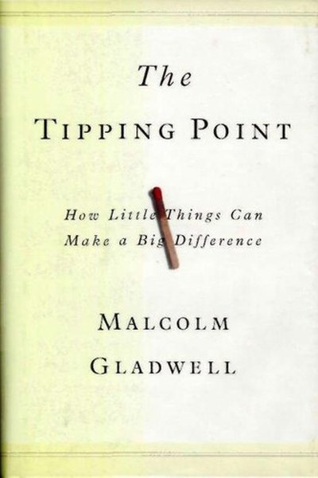

Library › Psychology & People
The Tipping Point — Summary & Key Lessons

How little things can make a big difference — the mechanics of epidemics.
📖 OPEN THE FULL INTERACTIVE BREAKDOWN →🌐 Read it in Hindi, Hinglish, Gujarati, Tamil & 22 more languages — free, with audio.
💡 The Big Idea
Social epidemics — from Hush Puppies' comeback to the decline of crime in New York — don't grow gradually; they tip. At a certain point, a small push triggers a sudden explosion. Gladwell identifies the levers: the Law of the Few (a few special people — connectors, mavens, salesmen — do the spreading), the Stickiness Factor (the message must be memorable), and the Power of Context (environments shape behaviour more than character). If you understand the three rules, you can design for the tipping point instead of waiting for it.
🧠 The 6 Key Lessons
Lesson 1: The Law of the Few: It's Not Everyone, It's Someone
The Rules
Gladwell's first law: epidemics are spread by a tiny minority — connectors (who know everyone), mavens (who know everything) and salesmen (who persuade anyone). The 80/20 rule on steroids: a handful of people drive the majority of transmission. The lesson: don't broadcast to everyone; find and empower the few who broadcast for you.
📖 Example: Paul Revere's ride tipped the American Revolution because Revere was a connector and maven in one — his network made his message spread. The practical edge: 'law of the few' is not a one-time decision — it's a habit that compounds with every repetition,… Read the full example →
⚡ Do this: Map your network: who are your 3-5 connectors, mavens and persuaders? Invest in them specifically this quarter.
Lesson 2: The Stickiness Factor: Make the Message Memorable
The Message
A contagious message must stick — and stickiness is often a small tweak, not a big campaign. Gladwell's example: Sesame Street and Blue's Clues made children's TV stickier through tiny format changes. The lesson: the difference between a message that dies and one that tips is often a detail — a memorable hook, a repeated rhythm, an emotional handle.
📖 Example: Blue's Clues stuck because it repeated episodes and let kids answer questions — small changes that made the show dramatically more memorable. Here's the part that usually gets missed: 'stickiness factor' works quietly. You won't see it working in a day;… Read the full example →
⚡ Do this: Take your key message and find one small 'sticky' tweak: a rhyme, a story, a question that makes it repeatable.
Lesson 3: The Power of Context: The Broken Window Effect
The Environment
Gladwell's most famous chapter: crime in New York dropped because the environment changed — graffiti cleaned, fare dodgers caught. Character matters less than context. The lesson: if you want behaviour to change, change the environment first — the visible broken windows. The same applies to habits, teams and cities.
📖 Example: The New York subway's crime fall was driven by fixing small visible disorder, which signalled that the rules were real. The real test of this lesson is a bad day: the principle that survives a crisis, a tight deadline and a doubting colleague is the one… Read the full example →
⚡ Do this: Find the 'broken window' in your environment — the one visible disorder that signals how things work — and fix it this week.
Lesson 4: The 150 Rule: Scale Destroys Trust
The Group Size
Gladwell's research: groups larger than about 150 lose the ability to maintain trust through personal knowledge — they need rules and hierarchies instead. The lesson: if your organization, community or even friend circle crosses ~150, the nature of relationships changes. Keep the core small enough to know each other, or build structures that simulate the smallness.
📖 Example: Gore-Tex and Gore companies split into small plants on purpose — staying under the 150 limit keeps trust and performance high. In practice, '150 rule' shows up in tiny daily choices long before it shows up in outcomes — the choice is invisible, but it… Read the full example →
⚡ Do this: Examine your team or community: is it still small enough for everyone to know everyone? If not, what structure rebuilds the intimacy?
Lesson 5: The Lesson of the Tipping Point Is Optimism
The Conclusion
Gladwell's closing claim: epidemics can be started — by anyone, anywhere, with the right levers. The world looks immovable, but it tips. The lesson: don't underestimate the power of a small, well-placed push. One person with the right message, the right network and the right context can start the avalanche.
📖 Example: Hush Puppies went from near-dead to a global fashion trend because a few stylish Manhattan kids wore them — and the epidemic took off from there. Most people nod at this principle and change nothing. The gap between agreeing and acting is where the whole… Read the full example →
⚡ Do this: Pick one cause, product or idea you care about. Design a small, specific push using the three rules: target 3 people, make it sticky, change one visible context.
Lesson 6: The Magic Number 150: Smallness Is a Strategy
The Limits
Gladwell's research on group size: once a group exceeds roughly 150 people, it can no longer be held together by personal relationships and mutual trust — it needs rules, hierarchies and bureaucracy instead. The lesson: size is not just a metric; it changes the nature of the organism. Teams, communities and companies that want to preserve trust and agility must either stay small, or consciously build small units inside the larger whole.
📖 Example: The Gore-Tex company deliberately keeps its factories under 150 people, and the army's special forces operate in small bands — both chose smallness because trust and speed live in smallness. Read the full example →
⚡ Do this: Examine your team, community or friend circle: if it has crossed ~150, what structure can recreate the intimacy of smallness?
✅ 5-Step Action Plan
- Identify and invest in your connectors, mavens and salesmen.
- Add one sticky tweak to your key message.
- Fix one broken window in your environment.
- Check your group size and rebuild intimacy if needed.
- Design one small, three-rule push this month.
⚠️ When This Doesn't Work
The tipping point is real — and it cuts both ways. Koo tipped beautifully: millions of downloads, government endorsements, a moment of national enthusiasm — and then tipped right back down when the moment passed, because tipping is not retention. Gladwell's book explains how things catch fire; it underweights how quickly fires die when the fuel (the moment, the context) changes. The caveat for marketers: an epidemic is a wave, not a possession. Design for the wave — and build the boat for after it.
💀 The Graveyard Proves It
🐦 Koo — India's Twitter Died Waiting for Twitter to Die. Burn: $60M+ raised; sold for scrap value. Read the full case study →
💬 Best Quotes from The Tipping Point
- “The tipping point is that magic moment when an idea, trend, or social behaviour crosses a threshold, tips, and spreads like wildfire.”
- “Look at the world around you. It may seem like an immovable, implacable place. It is not.”
- “The best way to understand the sudden appearance of a fashion trend or a disease is to realize that they are both, at heart, contagions.”
Interactive version: mark lessons as read, listen in your language, share quote cards.